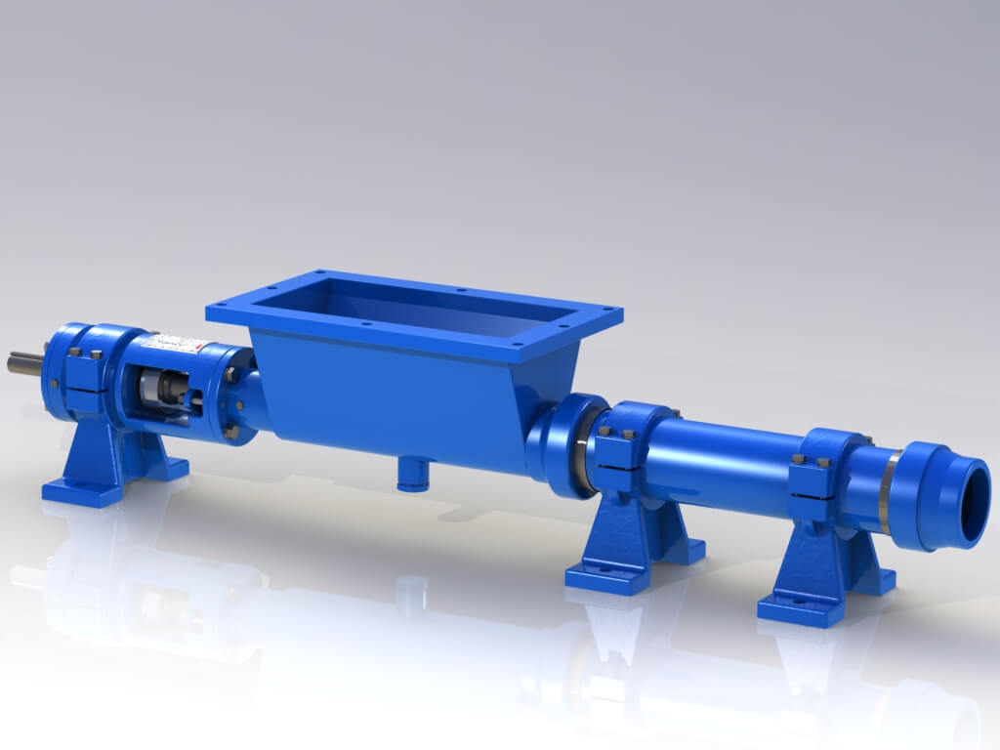
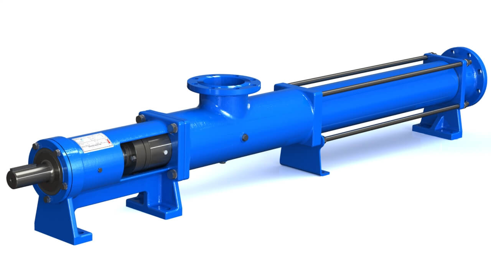

Bombas a Tornillo Industriales
Diseñadas para el transporte de fluidos viscosos, abrasivos o con sólidos en suspensión. Ideales para papeleras, tratamiento de aguas residuales, minería y procesos químicos.
Ver Modelos y Ficha TécnicaFabricamos bombas a tornillo (también llamadas bombas helicoidales o de cavidad progresiva) robustas y confiables para cada industria. Seleccione la categoría para ver las especificaciones técnicas completas.

Diseñadas para el transporte de fluidos viscosos, abrasivos o con sólidos en suspensión. Ideales para papeleras, tratamiento de aguas residuales, minería y procesos químicos.
Ver Modelos y Ficha Técnica
Sistemas BCP de superficie y de fondo para la extracción y transferencia de crudo y barro de perforación. Alta eficiencia en condiciones extremas y pozos difíciles.
Ver Modelos y Ficha Técnica